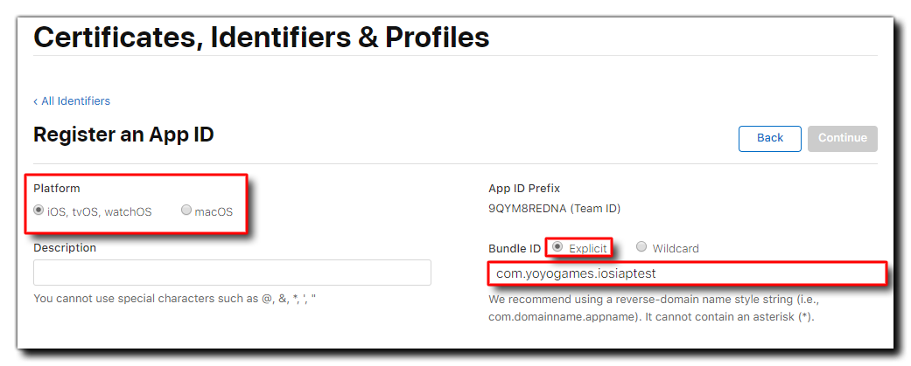
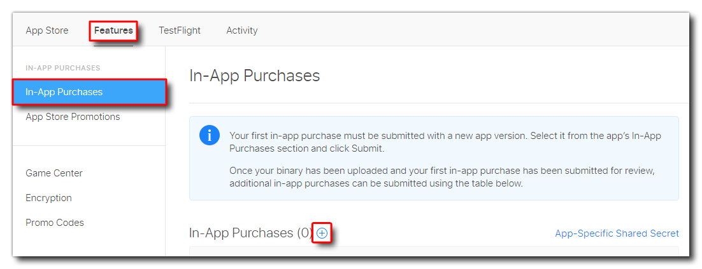
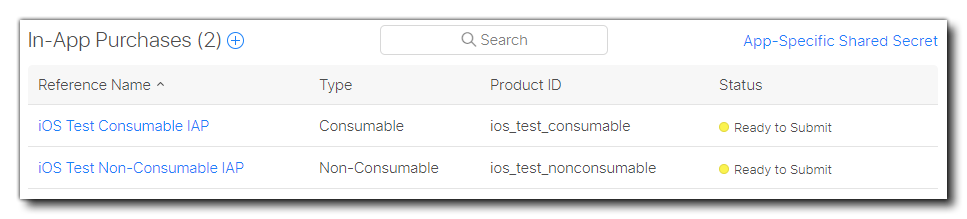
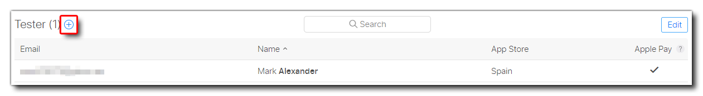
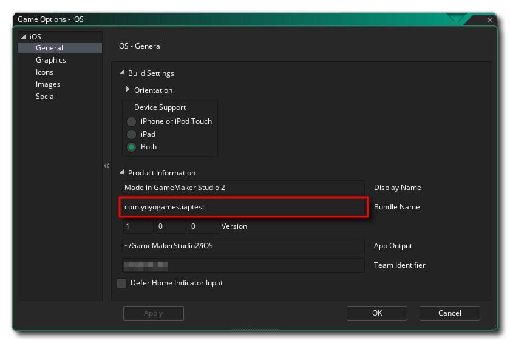
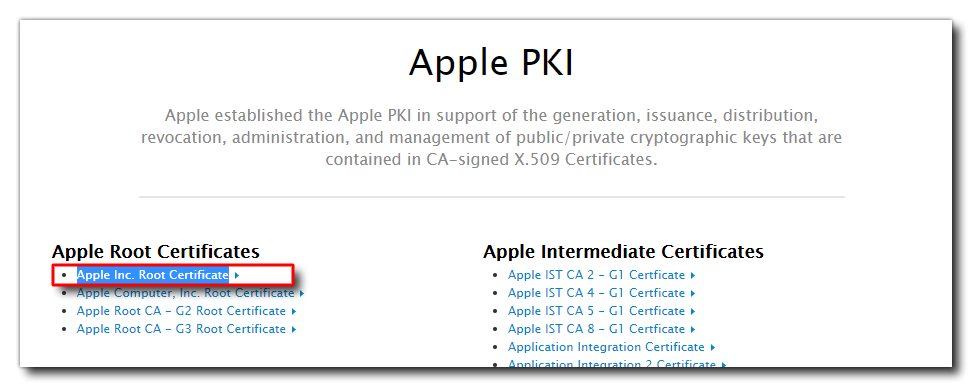

Setup
In this guide we'll be looking at how to set up things in the App Store to allow for In-App Purchases (IAP) in your macOS, iOS and tvOS apps for the App Store.
Warning
You need to make sure to use the right version of the extension. Information on it can be found in the release info.
Before continuing, you should have already set up and tested that the exports are working and have a test project or finished game that you want to add IAPs to. You can find out how to set up GameMaker for the different supported platforms here:
Setting Up The App ID
Before you can add any IAP code and test it, you first have to set up an app listing on your App Store Connect Console for the game.
Before that, however, you will need to sign in to your Apple Developer console and Register an App ID.
IMPORTANT If you've already set up the App ID for the project, then you can skip down to the section Setting Up App Store Connect.
Add a new app
The first thing to do is Add a new app.
Warning
Make sure to select the correct Bundle ID in the New App dialog.
When filling in the app information, make sure to select Explicit Bundle ID and supply a reverse URL format App ID, for example "com.yoyogames.iosiaptest". Wildcard IDs will not be valid for creating and testing IAPs:

The app ID will be created and will, by default, already have in-app purchases enabled. You can now move on to setting up the app listing and IAP details through App Store Connect.
Setting Up App Store Connect
Once you have your App ID created, you need to go to App Store Connect and set up a basic store listing and include the information that is required for the in-app purchases you need.
Add a new IAP
You then need to go to the Features tab, and add your first IAP. You can only add one for now, as Apple requires you to upload a binary which includes IAPs before you can create others, but the process for adding them later is the same as we outline here.

When you add the new IAP it can be any one of the types listed in In-app purchase types:
- Consumable - A product that is used once, after which it becomes depleted and must be purchased again.
- Non-Consumable - A product that is purchased once and does not expire or decrease with use.
- Auto-Renewable Subscription - A product that allows users to purchase dynamic content for a set period. This type of subscription renews automatically unless cancelled by the user.
- Non-Renewing Subscription - A product that allows users to purchase a service with a limited duration. The content of this in-app purchase can be static. This type of subscription does not renew automatically.
In this case we probably want to start with creating a consumable IAP, so select that then fill in the IAP details.
Note
The Product ID will be used to identify the IAP in GameMaker so be sure to make it appropriate (in this guide we'll call it ios_test_consumable).
IMPORTANT When targeting both iOS and macOS, Apple requires that you use different, unique product identifiers and doesn't distinguish between the two platforms, which is why in the examples on this page we use an "ios" prefix on the product IDs. iOS IAPs are also valid for tvOS so you do not need to set up different ones in that case.
You can then go ahead and fill in the rest of the IAP details (price, descriptions, etc.) - and be sure to supply a 640x920px screenshot in the review information, otherwise you'll get a "missing metadata" error. Once that's all done, click the Save button.
Later, after sending that first binary which includes IAP support, you will go through this process again and create an IAP listing for each purchase option that you want to include in your game. For the purposes of this tutorial we have made a second IAP called ios_test_nonconsumable, so our panel looks like this:

Once you have all the IAPs set up that you'd like to include you can continue on to setting up test accounts.
Setting Up A Sandbox Tester Account
Now that you've set up the initial IAP product you need to set up at least one Sandbox Tester Account. This account will be used to test the IAPs and any purchases will not be charged when using this account.
To set up this test account you need to go to App Store Connect > Users and Access > Sandbox Testers and then click the + button to add a new user:

Fill in the details required then press Save. With that done, you are ready to set up the game in GameMaker and test the IAP process.
Note
You cannot use the developer email when setting up test accounts.
Setting Up Your Game
Now that you have your initial IAP setup in the App Store Connect console, you need to prepare your game. For that you'll need to open the project in GameMaker and then go to the Game Options for the specific OS that you're targeting. Here you should supply the game name and App ID (Bundle ID) that you defined for the project (see the section Setting Up The App ID):

Save this setting now by clicking OK and you are almost ready to code, build, and then test purchases.
If you're not going to use your own server to validate purchases (something that Apple recommends), there is a way to validate locally - that is almost as secure - using the extension function iap_ValidateReceipt. Using this function, however, requires you to supply your Apple Inc. Root Certificate and include it with your project in the Included Files.

Download this file and add it to your Included Files for the project and then you can use the local validation function. For more information on this file, please see the following links:
- https://www.apple.com/certificateauthority/
- https://www.apple.com/appleca/AppleIncRootCertificate.cer